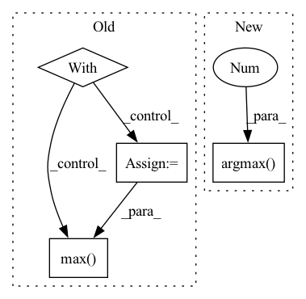

Pattern ID :3197

Before Change
criterion = nn.CrossEntropyLoss().to(device)
with torch.no_grad():
for batch_idx, (x, target) in enumerate(test_data):
x = x.to(device)
target = target.to(device)
pred = model(x)
loss = criterion(pred, target)
_, predicted = torch.max(pred, -1)
correct = predicted.eq(target).sum()
metrics["test_correct"] += correct.item()
metrics["test_loss"] += loss.item() * target.size(0)
After Change
loss = y_pred[0]
accuracy = y_pred[1]
correct = tf.equal(tf.argmax(y, 1), tf.cast(target, tf.int64))
// metrics["test_correct"] += tf.reduce_mean(tf.cast(correct, tf.float32))
metrics["test_loss"] += loss * target.size(0)
In pattern: SUPERPATTERN
Frequency: 4
Non-data size: 4
Instances
Fragment ID: 12148189
Project Name: fedml-ai/fedml
Commit Name: 51350e5aa8f340f92f5a5ff1f2f88cd9ab1fe47f
Time: 2022-08-14
Author: alexliang.kh@gmail.com
File Name: python/examples/cross_silo/tf-mqtt_s3_fedavg_mnist_lr_example/tf_model_trainer_classification.py
M Class Name: TfModelTrainerCLS
N Class Name: TfModelTrainerCLS
M Method Name: test(4)
N Method Name: test(4)
M Parent Class: ClientTrainer
N Parent Class: ClientTrainer
M File Name: python/examples/cross_silo/tf-mqtt_s3_fedavg_mnist_lr_example/tf_model_trainer_classification.py
N File Name: python/examples/cross_silo/tf-mqtt_s3_fedavg_mnist_lr_example/tf_model_trainer_classification.py
M Start Line: 68
M End Line: 90
N Start Line: 51
N End Line: 65
'>
Before Change
model.to(device)
model.eval()
with torch.no_grad():
inputs = model.preprocess_inference(points, device)
scores = model(inputs)
pred = torch.max(scores.squeeze(0), dim=-1).indices
// pred = pred.cpu().data.numpy()
return pred
After Change
if model.inference_end(inputs, results):
break
return np.argmax(model.test_probs, 1)
def run_test(self, device):
//self.device = device
model = self.model
'>
Fragment ID: 12148188
Project Name: intel-isl/open3d-ml
Commit Name: e02adc8a6f4ea0c8b8207d10bd4d9526a189578b
Time: 2020-08-23
Author: yilingq@umd.edu
File Name: ml3d/torch/pipelines/semantic_segmentation.py
M Class Name: SemanticSegmentation
N Class Name: SemanticSegmentation
M Method Name: run_inference(3)
N Method Name: run_inference(3)
M Parent Class:
N Parent Class:
M File Name: ml3d/torch/pipelines/semantic_segmentation.py
N File Name: ml3d/torch/pipelines/semantic_segmentation.py
M Start Line: 73
M End Line: 84
N Start Line: 73
N End Line: 88
'>
Before Change
criterion = nn.CrossEntropyLoss().to(device)
with torch.no_grad():
for batch_idx, (x, target) in enumerate(test_data):
x = x.to(device)
target = target.to(device)
pred = model(x)
loss = criterion(pred, target)
_, predicted = torch.max(pred, -1)
correct = predicted.eq(target).sum()
metrics["test_correct"] += correct.item()
metrics["test_loss"] += loss.item() * target.size(0)
After Change
loss = y_pred[0]
accuracy = y_pred[1]
correct = tf.equal(tf.argmax(y, 1), tf.cast(target, tf.int64))
// metrics["test_correct"] += tf.reduce_mean(tf.cast(correct, tf.float32))
metrics["test_loss"] += loss * target.size(0)
'>
Fragment ID: 12148194
Project Name: fedml-ai/fedml
Commit Name: 9e66b6521a89e76f568a18fc69f0e6cf7c3c6166
Time: 2022-08-14
Author: alex.gpt.llm@gmail.com
File Name: python/examples/cross_silo/tf-mqtt_s3_fedavg_mnist_lr_example/tf_model_trainer_classification.py
M Class Name: TfModelTrainerCLS
N Class Name: TfModelTrainerCLS
M Method Name: test(4)
N Method Name: test(4)
M Parent Class: ClientTrainer
N Parent Class: ClientTrainer
M File Name: python/examples/cross_silo/tf-mqtt_s3_fedavg_mnist_lr_example/tf_model_trainer_classification.py
N File Name: python/examples/cross_silo/tf-mqtt_s3_fedavg_mnist_lr_example/tf_model_trainer_classification.py
M Start Line: 68
M End Line: 90
N Start Line: 51
N End Line: 65